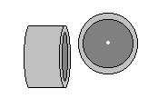
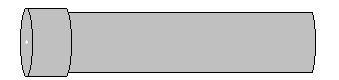
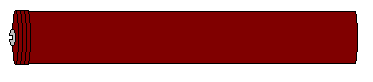
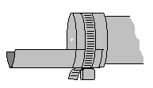
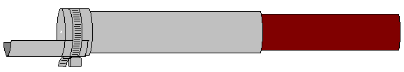

One-shot Flame-thrower
And Dispenser of Other Fluids
by
Nero O'Leary
|
Heavy duty body armor makes government thugs resistant even to rifle bullets, while gas masks and additional NBC equipment make chemical weapons nearly useless. But even Nomex suits can only do so much to protect a thug from fire. A typical military flame-thrower is cumbersome and obvious, though. Also expensive. But a small, simple, and cheap home-built version, based on toy water cannons, is possible. The basic structure is similar to a syringe. You could use a Molotov cocktail, but this can be aimed so you don't burn people or things you don't want to. You will need: a 12-18 inch length of 2" steel pipe, threaded on one end, a cap to fit the threaded end, a piece of 8 ounce (or more) leather, a 13-19" wooden dowel of a diameter to neatly fit into the pipe, a wood screw, a hose clamp, and some light gauge sheet metal, about 3 inches by 4. Also some plumber's teflon tape and some wire.
 Start by drilling a small hole in the center of the pipe cap; an eighth of an inch is good. Make sure you drill straight, not at an angle, or your thrower won't shoot straight. Wrap a layer of teflon tape around the pipe threads, then screw the cap on. The tape is to give a good water-tight seal so the pipe won't leak. If it does, you might get burned. This is the body of the syringe. Make the syringe plunger by cutting out three leather circles that fit the inside of the pipe snugly. It might be a good idea to start with circles that are a little too big. Stack the three leather disks, and attach them to one end of the wooden dowel with the woodscrew. You may need to drill a pilot hole first. Make sure this fits the pipe correctly by inserting the leather end of the plunger into the pipe and push it down. It should slide down evenly, but with some resistance. It should blow air out the hole in the end cap. Trim the disks down if they are too big. Make sure they stay circular so they'll seal right, no gaps.  When you know the disk on the plunger fits right, pull it out and grease up the leather disk. This seals the tube better, to be sure you don't get leaks. Use automotive lube grease, or even cooking shortening. When you've greased the plunger disk, push it into the tube all the way. Stick the end cap into a bowl of water and pull the plunger back, but not all the way out of the pipe, This should suck water into the pipe. Now test your syringe by aiming it at some target and pushing the plunger in again. You should get a stream of water. You can shoot farther by pushing the plunger harder. You can even stop here, and you'll have a neat water cannon. But if you just want that, use PVC pipe instead of steel. But you want non-melting, fireproof steel for a flame-thrower
 A flame-thrower squirts a flammable liquid like alcohol or gasoline. (If you use just alcohol, you might be able to get away with PVC pipe. It's a lot lighter.) So you need a way to light the liquid when it comes out. Mount the piece of sheet metal to the end cap with a hose clamp. Tie a small scrap of rag into the tray with wire.Squirt some more water out to make sure the tray and rag don't block the stream. If it does, use a smaller rag, or bend the tray down some. Your flame-thrower is finished.  Test it by filling the tube with gas or alcohol. If you want to carry this around, stick a small wooden or rubber plug into the squirt hole so it doesn't leak. When you're ready to shoot, pull the plug. Push the plunger a little bit, just enough to get some gas to squirt out onto the rag in the tray. Light the soaked rag, point the end at your target, and push the plunger. The gas should shoot through the flame in the tray and catch fire. Things to remember: Watch how you hold the flame-thrower; the tray should stay under the hole in the cap. Don't light the rag until you really are ready to shoot; you don't want a pipe full of gas in your hand to get too hot. Don't ever pull the plunger back when the rag is lit; you can pull the flame inside; it might explode. Before lighting the rag, make sure no gas leaked onto you. Other stuff: You don't have to shoot fire. Like I said, this can just be a squirt gun, too. Or you can fill it with hot sauce and squirt that at someone. You can make a good sauce for this by running habanero peppers through a blender, then straining it to get a squirtable fluid. Ammonia is pretty obnoxious, too. Or even paint.
Did you like this article?
|